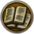

本文内容更新缓慢，最新模板说明可在对应模板文档页面查看。
提示模板
这些模板需要放置在词条的顶部。
版本模板
无论翻译还是撰写词条请务必记得使用版本模板来指明词条所适用的版本
切记版本模板在文章中需挂在第一行
常规版本模板
仅可以用在词条的顶部，用法参见Template:Version
段落版本模板
用法参见：Template:SVersion
翻译模板
在当前需要翻译的词条上加入这个模板，就可以将这篇词条归属到"需要翻译"这个分类中。
如果您只是一名读者，您也可以在您觉得应当优先翻译的词条顶部挂上常规翻译模板。
常规翻译模板
输入
{{需要翻译}}
会生成以下内容：
| 这篇文章正在翻译中。 如果您感兴趣可以通过借助官方Wiki来编辑它。 |
段落翻译模板
输入
{{szh}}
会生成以下内容：
| 这部分内容需要翻译成中文。 |
需求模板
用法参见：Template:需要完善
请求删除模板
请在|后写下请求删除的原因。
缺省效果
{{delete}}或是{{请求删除}}
会生成以下内容：
 | 这篇页面已被提出快速删除。 在提出快速删除时你必须注明删除理由，否则任何人可以移除本模板。 |
正常效果
{{请求删除|这只是个测试页面，帮我删了吧。}}
会生成以下内容：
| 这篇页面已被提出快速删除。 理由：这只是个测试页面，帮我删了吧。 |
请求重写模板
{{rewrite}}或是{{重写}}
会生成以下内容：
| 这篇文章没有按照编辑指南的要求来编写，部分或整个词条可能需要重写。 若您有兴趣请协助我们改善这篇词条。关于必须修改的内容，请参见本词条的讨论页面。 |
请求合并模板
{{merge}}或是{{合并}}
会生成以下内容：
| 有用户提出将此页面合并至[[{{{1}}}]]。 请在本页面的讨论页中参与讨论并拟定合并计划。 |
页中模板
供词条中使用的模板。
国旗模板
- 主条目：国旗方针
国家关系模板
独立国家或朝贡国
{{Is_free_or_tributary_trigger}}或中文重定向：
{{独立国家}}{{自由或朝贡}}{{只是朝贡}}
会生成以下内容：
是独立国家或朝贡国。
除朝贡国外的附属国
{{Is_subject_other_than_tributary_trigger}}或中文重定向：
{{附属国}}{{非朝贡附属国}}
会生成以下内容：
颜色模板
具体用法可参见：Template:Red与Template:Green
红色
{{red|我要用红色字}}或是{{红色|我要用红色字}}
会生成以下内容：
我要用红色字
绿色
{{green|我要用绿色字}}或是{{绿色|我要用绿色字}}
会生成以下内容：
我要用绿色字
上标模板
具体用法可参见：Template:Sup
输入{{sup|一派胡言|欧盟呢最近发表了一个报告说呢……呃……北京会透过一些渠道去影响、干预香港的法治，你对这个看法有什么回应呢？}}
会生成以下内容：欧盟呢最近发表了一个报告说呢……呃……北京会透过一些渠道去影响、干预香港的法治，你对这个看法有什么回应呢？ [一派胡言]
也可以使用中文重定向{{上标}}，用法效果同上。
悬停模板
具体用法可参见：Template:Hover_box
输入{{Hover_box|当然啦。|中央也支持他吗？}}
会生成以下内容：中央也支持他吗？
也可以使用中文重定向{{悬停}}，用法效果同上。
补充内容模板
具体用法可参见：Template:Add
输入{{Add}}/{{补充}}
会生成以下内容：
其它用法
{{Add|Strategy}} 生成策略补充模板。
{{Add|Background}} 生成背景故事补充模板。